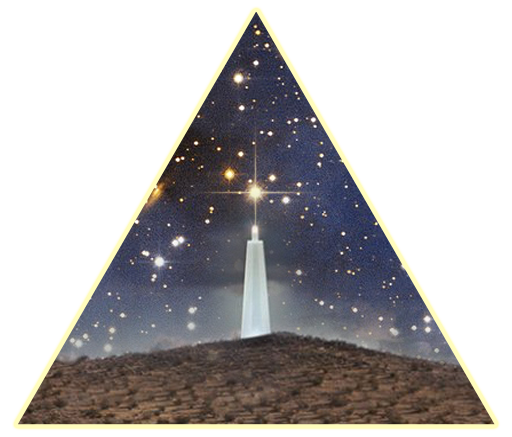

"It Will Take Us A Million Light Years From Here, Beyond The Limitations Of This World."
The "Official" Narrative: STARGATE HINKLEY, most commonly know as the "Desert Lighthouse", is located deep within the Mojave Desert near the desert town of Hinkley, CA - not far from Edwards Air Force Base. This lonely part of the Mojave Desert is heavily militarized and is considered a strategic corridor during the coming apocalyptic nuclear fallout, but more importantly it is adjacent to a known primary access point to space for governmental and commercial entities. In 2017, the Desert Lighthouse appeared suddenly and without explanation. Within six months, news reports began surfacing about its arrival - attributing Daniel Hawkins (The KEEPER) as creator of the mysterious structure. The KEEPER has claimed to have no affiliation with the US Government or any private space companies - instead he explains his journey to be of "existential importance". A number of news outlets quoted The KEEPER saying, "It came to me in a vision as I traveled through the desert at night ... now I am amidst an existential quest to maintain a beacon of light so that we can all find ourselves in the great void." The KEEPER's claims continued: "I have been tasked with bringing light to the Mojave and to create a point of connection so the human experience no longer remains untethered in our cosmic darkness."
If one is to truly receive The KEEPERS's claim of establishing connection in the "cosmic darkness", we can absorb the true purpose of the "Desert Lighthouse". The KEEPER's intervention in Mojave's desolate expanse clearly intends to remedy Earth's isolation in the universe by connecting it to the stars - through what we feel is more aptly titled, STARGATE HINKLEY. What is STARGATE HINKLEY? It is the cosmic gateway that will bring an age of intergalactic travel. True believers who join The DISCIPLES OF STARGATE HINKLEY will gain access to an unbounded existence in the universe's unlimited expanse. Why do we call it STARGATE HINKLEY, and not the "Desert Lighthouse"? The D.o.S.H. believe The KEEPER refers to STARGATE HINKLEY as the "Desert Lighthouse" in order to mask the true purpose of the structure temporarily in order to keep it safe from unfriendly entities until it is able to fulfill its true purpose. Who is behind STARGATE HINKLEY? Our research suggests The KEEPER is an individual operating under the alias Daniel Hawkins. We believe The KEEPER is connected to impossible advancements in space travel technology we have seen since the first appearance of STARGATE HINKLEY in 2017. The KEEPER maintains multiple identities to protect the urgent realization of STARGATE HINKLEY and the arrival of the Cosmic Ascension. Deep research show The KEEPER has secretive ties to Silicon Valley - a possible source of his technology. There is more to learn about The KEEPER's life but we know he has been contacted by entities unknown to facilitate the inventible - the moment when a cosmic door is opened between Earth and the galactic skies.
"It arrived in a vision, bringing light to the cosmic darkness. But was destiny an accident?"
STARGATE HINKLEY miraculously arrived in 2017 bringing light to our darkness. Little is known about STARGATE HINKLEY's "Development Stage" other than what The KEEPER has revealed - "...it took 10 years to manifest the Desert Lighthouse [STARGATE HINKLEY], and it was a perilous journey with great risk to myself and many others." The KEEPER's is clearly referencing Earth as the "many others". The "risk" is if STARGATE HINKLEY fails, the Cosmic Ascension fails, and EARTH is lost.
Fortunately, The KEEPER succeeded! And that unendurable negative version of the future did not occur. But was STARGATE HINKLEY always destined to succeed? Where ELON MUSK, JEFF BEZOS, and ALL governmental space agencies have failed, STARGATE HINKLEY has prevailed! But WHY? STARGATE HINKLEY is leveraging technologies that MUSK and his contemporaries alike are desperately trying understand. Parallels between STARGATE HINKLEY and others' failed attempts are visible. Methodologies are recognizable. Designs reminiscent. They ALL appear to be trying to reverse engineer STARGATE HINKLEY technology. However, their quests and guiding principles to commercialize this cosmic technology have misguided their efforts and resulted in the improbable to become reality.
"Was STARGATE HINKLEY expected to be an operational gateway? Or was it a pathfinder that exceeded all expectations set for it?"
A sympathetic insider at SpaceX told us that they have been tirelessly trying to understand STARGATE HINKLEY. The company, is said to be relying on Neuralink recipients as a method to "farm" human consciousness in order to predict the path into galactic space. These Neuralink Cogs have repeatedly concluded that the innovations delivered to The KEEPER in his original vision, delivered from unknown entities, were only supposed to introduce a Preto-type technology into our consciousness to start the next wave of space advancements, not for STARGATE HINKLEY to become the advancement itself. However, due to The KEEPER's pure and unconstrained vision, the realization of STARGATE HINKLEY transcended the Preto-type phase and has reached operational status. Although we have not experienced the Cosmic Ascension yet, we expect to in the immediate future. The desperation and fear driving "the competitors" leads us to believe the full prophecy of STARGATE HINKLEY and its access to the cosmic sky is imminent.
EARTH is lost. It is stuck in an orbit of endless desolation. But an unexpected LIGHT has arrived that could change everything. YOU must now make a decision that affects the rest of your life, your family, and the future of consciousness. This will not be an easy decision. No matter what you choose, your life today will never be the same. Sounds scary? Fortunately you are at the precipice of receiving a future unbounded from the hardships you face today! Sounds better, right? D.o.S.H. is here to bring you options and opportunity where only desolation and darkness were previously found. D.o.S.H is ready to welcome YOU into a luminous future!
D.o.S.H. are those whom have absorbed the light, and received the vision. The DISCIPLES of STARGATE HINKLEY. We join The KEEPER in manifesting his true vision and the realization of STARGATE HINKLEY's prophecy. Now, we await the linking of the cosmic gateway. While we eagerly wait our turn in the queue of destiny, we spread The LIGHT. We will join The KEEPER in the Cosmic Ascension and are here to a clear path for YOU to join us in this collective journey towards the stars.